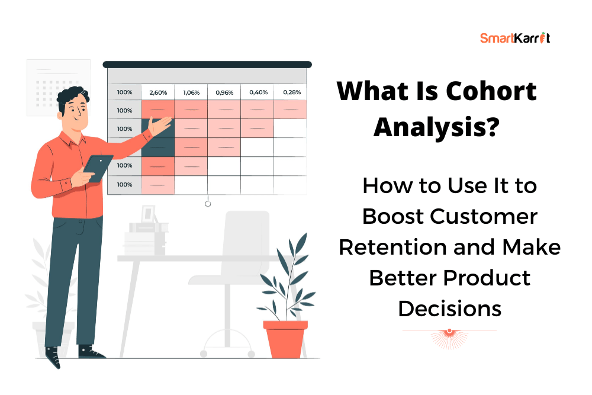

In this Project, we extract data about Health Facilities from the Nigeria Health Facility Registry (HFR) website using Selenium. A bot was created with Selenium to go into multiple tables, rows, pop ups and pages to extract data which was then scraped into multiple tables bearing primary keys. The data is cleaned using Pandas, the Analysis is done with SQL, and the Visualization is completed with Tableau.

A deep dive into the global numbers recorded on the pandemic across the world. Data concerning death and vaccination were analysed and visualised by country, continent, and time..

A time-based Cohort analysis where we are looking at the time a certain group of customers made purchases from the user, and then further observe their behaviour after that first instance of activity. The data from the time based cohort was used to do a retention based analysis which was then visualised in Tableau.
In this project, we explore a retail sales dataset and generate various analytics and insights from customers' past purchase behaviour. We go from analysing sales revenue to creating a customer segmentation analysis using the RFM technique. We go from basic SQL queries to exploring complex problems using SUB QUERY, CTEs, AGGREGATE, and WINDOW functions.
This project aims to analyze loan data from Prosper Marketplace, a company based in San Francisco, California, that specializes in providing peer-to-peer loans at low interest rates to borrowers. The goal is to identify the different borrower motivations when applying for loans, and several factors that may influence loan favorability (measured in terms of Borrower Rates).

In this SQL project, I've cleaned the Nashville housing data table for better analysis using intermediate to advanced SQL queries. With this dataset, I Practiced a wide range of SQL queries including Aggregate Functions, Joins, Window Functions, CTEs, and Views to clean this dataset.

Here, you can get full access to all my Visualisations and Dashboards from my Tableau Public profile on projects I have done. Visualizations are highly important in data storytelling, and you can view them here .